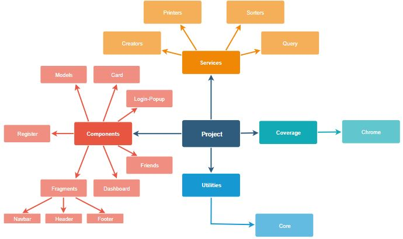
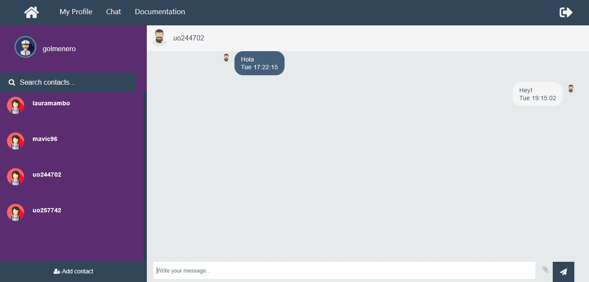

1. Introduction and Goals
The development will consist of a WebApp whose objective is to be a decentralized chat, using SOLID technologies. This chat will allow users to exchange messages in different formats (audio, text, video), as well as other functions such as: share screen or video call; It will also allow you to save friends lists, show notifications, among other functions. It will be a web application developed at Angular, and an RDF library will be used to communicate and obtain information on the different PODs.
1.1. Requirements Overview
The application will mainly comply with the following:
-
The system will be based on a decentralized architecture where data storage is separated from the app
-
Users can store their chat data in their own pods
-
The app will allow a user to share pictures, videos or other kinds of files with other friends through the chat
-
A user can get notifications when some friend wants to chat with him
-
Users can have groups of friends with whom they may want to chat
-
It will be possible to have group chats where all members receive the messages
-
Users can have live calls and videos
-
Users can share their screens in the chat
1.2. Quality Goals
The main Stakeholders of this application are Inrupt and users, I will list the most important quality goals for them:
-
Usability : Ease of use by non-technical people.
-
Responsiveness : The application must send messages in real time.
-
Privacy: The application must keep the data private (this is what solid is based on, each one owns their data).
-
Security: The application must be secure, users must know who they are talking to and who has access to the chat.
1.3. Stakeholders
Stakeholders of the system:
-
Developers
-
Professor
-
Users
-
Inrupt
| Role/Name | Contact | Expectations |
|---|---|---|
Developer |
Have to work with the architecture or with code, documentation of the architecture,have to come up with decisions about the system or its development |
|
Developer |
Have to work with the architecture or with code, documentation of the architecture,have to come up with decisions about the system or its development |
|
Developer |
Have to work with the architecture or with code, documentation of the architecture,have to come up with decisions about the system or its development |
|
Developer |
Have to work with the architecture or with code, documentation of the architecture,have to come up with decisions about the system or its development |
|
Developer |
Have to work with the architecture or with code, documentation of the architecture,have to come up with decisions about the system or its development |
|
Developer |
Have to work with the architecture or with code, documentation of the architecture,have to come up with decisions about the system or its development https://forum.solidproject.org/u/danielferromeral/activity |
|
Professor |
Evaluate and guide the project |
|
Users |
Users can chat,they can have live calls and videos and they can share their screens in the chat |
|
Inrupt |
They has been proposed as a challenge |
2. Architecture Constraints
2.1. Technical Constraints
| Code | Restricction | Motive |
|---|---|---|
TC001 |
Online independence: no central control of data |
Linked-data are completely decentralized and fully under users' control rather than controlled by other entities. |
TC002 |
Frameworks: Angular |
We haven´t worked with this framework before, so we will have to learn how to use it. |
TC003 |
SOLID technology |
app based on the solid specifications. |
TC004 |
Data Storage |
Users can store their chat data in their own pods. |
TC005 |
Share files |
The app will allow a user to share pictures, videos or other kinds of files with other friends through the chat. |
TC006 |
Notifications |
A user can get notifications when some friend wants to chat with him. |
TC007 |
Groups |
Users can have groups of friends with whom they may want to chat. |
TC008 |
Program language: JavaScrip or TypeScript |
We have chosen this language, but we don’t have enough knowledge about this languages. |
2.2. Organizational Constraints
| Code | Restricction | Motive |
|---|---|---|
OC001 |
About Version Control: Git, Tool: Github |
Keep a version of the project after making changes |
OC002 |
6 person group |
We didn’t know each other |
OC003 |
Time schedule |
We don’t have a lot of time for developing the app. Furthermore, we are developing other proyects at the same time. |
0C004 |
Documentation |
|
CC005 |
Open source |
The project, including source code and documentation. |
CC005 |
Beta version |
Limited time to develop the project maximum in May 2019. |
2.3. Conventions Constraints
| Code | Restricction | Motive |
|---|---|---|
CC001 |
Language |
English. The project and the corresponding blog targets an international audience, so English should be used throughout the whole project. |
CC002 |
6 person group |
We didn’t know each other |
CC003 |
Time schedule |
We don’t have a lot of time for developing the app. Furthermore, we are developing other proyects at the same time. |
CC004 |
Non-technical |
Every user should manage the app. |
CC005 |
Security |
Data must not be in touch by external devices |
CC006 |
Privacy |
Only own users can manage their own data. |
CC007 |
Intuitive |
Aesthetics and friendliness of the application. |
CC008 |
Usability |
Usability of technical documentation. |
CC009 |
Originality |
Originality of the solution |
CC010 |
Documentation |
We use AsciiDoc |
3. System Scope and Context
The project that we are going to develop aims to communicate two people through different mechanisms:
-
Text messages.
-
Images.
-
Videos.
-
Video calls.
However, the approach that the application will take it´s around permits. A user can not send a file of any kind or speak with a person if they do not have explicit permission from the recipient.
But the most important point of the chat is not the permissions, but the decentralization. We want only users to have access to the content of those conversations, so that they are the owners of their personal information.
To achieve this goal we will use SOLID. SOLID is a project that consists of a decentralized website. It deals with establishing a connection between several users, separating data application. To establish this connection, we will use what is known as POD. A POD is a unique profile of each user, which allows to store information on the web about it.
We will use these PODs to connect both users, but the data they exchange will be stored in the interlocutors' devices. In this way, we will create a private chat that will have the advantage of being isolated, reliable and safe.
3.1. Business Context
-
Communication elements:
-
Users: Users are the main recipient of the application.
-
Web: Users will connect to the web through their PODs to establish secure communication.
-
-
Communication process:
-
The partners create a POD.
-
The user adds as friend through the PODs to the second interlocutor.
-
The interlocutors log in with their POD in the chat.
-
Ready!
-
What data are exchanged with the environment? Through the website, users will enter some small data on the SOLID website to obtain their POD. Once established the connection between both interlocutors, they will be the only owners and holders of the information they exchange.
| Communication Partner | Input | Output |
|---|---|---|
User |
Chat, video, images, POD information |
Chat, video, images, POD information |
Web |
POD, Server Connection |
3.2. Technical Context
As we have said before, we will use the so-called PODs provided by SOLID to connect to the server of the same, and through it, communicate with other people.
For the design of the connection we will use different mechanisms:
-
RDF: This library allows us to establish the connection. Act as a communicator and thanks to it we can obtain the POD information necessary to establish communication.
-
Authenticator: This tool receives the POD of a user and allows us to know if it is a valid POD.
-
Angular: It is a JavaScript framework that will allow us to handle the language in a more comfortable way.
4. Solution Strategy
4.1. Technology and IDE
The team had to choose between new technologies for us and technologies already kown but that did not have as much suport to SOLID. Based on what we knew, our first option was to choose Java as programming language, but after reading the SOLID documentation, we decided to choose TypeScript, which is a JavaScript-based language, and, more specifically, the Angular Framework.
About the IDE, we choose WebStorm due to its power and the fact that, as students, we have a free payment license. In addition, some of the members of the group have used it in previous subjects. Although, another powerful tools like Visual Studio Code have been really helpful when developing our project.
4.2. Architectural pattern
The development of our architecture is based on a service system. The main class relies on these services to perform the different operations that it needs throughout the execution of the application.
4.3. Methodology of work
We will use Scrum to develope this project. Scrum can provide us an early software development, and more independence when programming. Our project will start implementing the basic functions of a chat and it will grow in complexity (https://en.wikipedia.org/wiki/Scrum_(software_development)).
5. Building Block View
Here is a simple scheme that explains the basic organizations of the application components:

Red: Components of the chat
Light Blue: Coverage Tests and different Utilities
Orange: Services.
5.1. Whitebox Overall System
We will explain some of the application parts functionality:
5.1.1. Components
This are the different components that interact between them. Each one component is divided in some files, but the most important ones are:
-
HTML: Is represents the interface layer.
-
JS: This is the logic layer, it must contain all the useful logic.
5.1.2. Services
Services are the utilities that our components use to help them improving it´s functionality.
5.1.3. Coverage
Represents the code testing. As we said before, tests are executed in Karma, with Jasmine framework. We use Google Chrome to execute the tests.
5.1.4. Utilities
It is all theuseful resources. In this case, weve used a core that allows us to interact with some librarys. It contains some useful methods.
6. Runtime View
The architecture of the application is very simple:
Once you launch the applicacion, youll see a login views. That login view will redirect you to the official solid login page.

In the solid login page, you´ll introduce your solid credentials. If your data is correct, you´ll login into your profile and see your solid profile page.
In the navegation bar of the application, you will see 4 labels:
-
Profile: The same page. In there you can edit your profile information
-
Chat: The chat page. We´ll introduce about it later.
-
Documentation: A documentation page.
-
A logout icon: It will redirect to the application login.
The chat page

As you can see, the chat page is divided in three layers:
-
Friends layer: In this layer you can search between your friends (for those you should add in solid), and start a conversation.
-
Conversation layer: Here it will show the different conversations. Your own messages will appear in white colour, and your friends´ will be black.
-
Message layer: There you can send a message to your friend. Once you write you can press the button or simply the Enter key to send it. This message will appear as yours in the conversation layer and will be sended to your partner.
Lets see a couple runtimes scenarios
Scenario 1 Actor 1 wants to send a message to one of his friends, after login in successfully, his runtime would be like this:

Scenario 2 Actor 1 wants to send a message to Actor 2, Actor 2 sends a message to Actor 3 and Actor 3 sends a message to Actor 1:

7. Deployment View
¿What hardware do you need to use the application?
Fortunately, to use the application you just need one computer connected to Internet. You can also use a mobile phone to chat with your friends, but we haven´t developed the app specyfically to be used on it, so there will be some problems. We are working hard to try to make it more comfortable for mobile users.
At this point of the development, there is no need for geographical permissions or others like that, so the only thing you need is a computer and an Internet connection.
Although, this is an early version of the project, and it hasn´t been optimized yet, so you´ll need some available RAM in your computer, but not too much for worrying about it.
We developed this app mostly in Google Chrome and Firefox, so we recommend this browser.
Mapping of relationship between hardware and software
The relationship between software and hardware is very simple, there are three main components that need special attention:
-
Computer.
-
Browser: As we said before, we recommend Google Chrome and Firefox. Browser connects to the application.
-
Application: It connects to server.
-
Server: Automatically synchronizes with solid server.
It is important to notice that talking about resources the application consumes the same resources as another app, because it is launched in a browser.
8. Cross-cutting Concepts
8.1. Important modules
As we saw before, the architecture of the application is based on services, like printers, creators and another useful ones.
It is important to remember that for the application we are using npm, working (obviously) in Node.js, which is a package administrator that allows you to easily manage your resources.
-
Testing * To test our application, we are using karma testing, with the Jasmine framework.
Jasmine is an easy OpenSource framework that allows you to test JavaScript functionality developed in Angular. More information here:
8.2. Directory Structure and Required Files
This is the directory structure of the source folder:
ââââapp â ââââcard â ââââdashboard â ââââfragments â â ââââfooter â â ââââheader â â âââânavbar â ââââfriends â ââââlogin â ââââlogin-popup â ââââmodels â ââââregister â ââââservices â ââââcreators â ââââprinters â ââââquery â ââââsorters â ââââutils ââââassets â ââââimages â ââââjs â â ââââlibs â ââââtypes â âââârdflib ââââcoverage â ââââChrome 73.0.3683 (Windows 10 0.0.0) ââââenvironments
9. Design Decisions
-
First decision is that we are using Git as version control system instead of using mercurial, vsn, etc. and GitHub as source code management instead of using Bitbucket, this decision was imposed by the teachers of the subject.
-
We are using javascript family language(javascript, typescript, node.js, angular, etc) to build the application as the main programming language. As we understand, javascript is the easiest way to make a SOLID application.
-
We are also using basic languages for the web such as html, css, etc.
-
Social linked data(SOLID) based application. A must decision we have to follow if we want to make a decentralized application. This means following several important constraints to build the application. One of them is storing date in PODS, so the user is the owner of their data.
-
Using a Service architecture that helps us to easily separate responsabilities. This services are used from the main app to obtain extra-functionality.
-
Following Angular components structure, so we can build a high cohesion and low coupling app. Our main component is FriendComponent and it represents the chat page where we can select chats and send messages to our Solid friends. We decided to have all chat functionality in the same page because we though it was better for the final user as it will be able to move in our app with just a few clicks.
-
We use the known Karma-Jasmine framework for implementing unit test, a tool that allow us to easily test code on Angular, it helps us separating test code from the application code, it is also useful and easy to learn how to test. We though about using Mocha.js for tests but we had a few tests done yet so we decide to keep on with Karma-Jasmine.
-
At the beginning we used a simple text file to keep message info. Later on we decide to store messages in a ttl file. We stored message content and metadata in Turtle language (.ttl). The main reason to store data in rdf is that we can communicate with other applications that have the same ontology.
-
As we store message data in ttl format, we need a tool for getting that ttl info. The way we recover that info is with Sparql queries, We create queries to access the Turtle files and get resources faster than using plain text.
-
We have a notifications service that works in every browser and allows us to send a notification to a user when he receives a message. We decide to use this notification service because we think it’s relevant in a real time chat application.
-
Group chat develop is in a alpha version, we have decided to store all the conversation in group creators/owner pod.
10. Quality Requirements
There are some important quality requirements that need to be considered when developing an application, specially when you develop a server-connected one.
The most importants are:
-
Velocity: When you are chatting with a friend, you need a fast application to make sure the conversation is fluid.
-
Security: When talking about a de-centralized chat, we ensure that our application is well-safe and we have control of our own informations.
-
Fluency: We need a optimized application.
-
Space: This is a forgotten one. This kind of application should be light and easy to convert to an executable file.
10.1. Quality Tree
Heres a map that allows us to easily get a high quality application:

10.2. Quality Scenarios
Scenario 1 - Security
When a user tries to access to a private conversation, it should´t be permitted.
Scenario 2 - Velocity and Fluency
When conversating with a friend, it is really logic that conversation should be fast.
Scenario 3 - Space
As we said, an application should be as lighter as possible, if a concrete use wants to create a portable version.
11. Risks and Technical Debts
A list of identified technical risks or technical debts, ordered by priority
âRisk management is project management for grown-upsâ (Tim Lister, Atlantic Systems Guild.)
This should be your motto for systematic detection and evaluation of risks and technical debts in the architecture, which will be needed by management stakeholders (e.g. project managers, product owners) as part of the overall risk analysis and measurement planning.
List of risks and/or technical debts, probably including suggested measures to minimize, mitigate or avoid risks or reduce technical debts.
| Risks | Solutions |
|---|---|
Lack of knowledge and use of angularjs |
|
Lack of knowledge of solid |
|
Abandonment / lack of work of a member |
|
Lack of time to complete the project |
|
Misunderstood the requirements of the application |
|
Problems with git |
|
12. Glossary
Definition of most important terms every stakeholder should know to understand the documentation.
Order by rarety.
Only in english at the moment.
| Term | Definition |
|---|---|
Decentralized |
User is the owner of their data and not the application |
Git |
Version control system |
Inrupt |
SOLID enterprise |
MVC |
Model-View-Controler, software architecture |
PODS |
Personal Online Data Stores, used to save data |
RDF |
Resource Description Framework, standard model for data interchange in the web |
Scrum |
Agile methodology for working in group |
SOLID |
Social Linked Data |
Stakeholders |
People interested in a proyect |
Angular |
A framwork for working in typescript |
Turtle |
Is a syntax for expressing data in RDF |
Karma |
IDE for testing an application |
Jasmine |
Framework to easily test Angular JavaScript based applications |
Sparql |
Query language to obtain RDF graphs |
About arc42
arc42, the Template for documentation of software and system architecture.
By Dr. Gernot Starke, Dr. Peter Hruschka and contributors.
Template Revision: 7.0 EN (based on asciidoc), January 2017
© We acknowledge that this document uses material from the arc 42 architecture template, http://www.arc42.de. Created by Dr. Peter Hruschka & Dr. Gernot Starke.